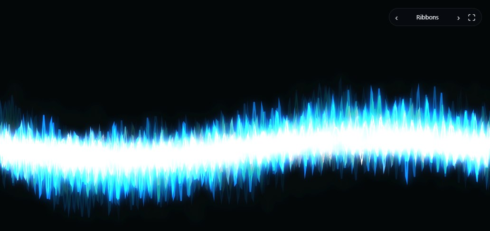

Visualizers
Pick one of five visualizers to play with your music. Open it from the sidebar or press V, then go full screen.
- Spectrum Bars · equalizer bars with falling peaks
- Ribbons · glowing waveform lines
- Halo · your album cover in a ring of light
- Nebula · clouds of colour that bloom with the music
- Warp · fly through the stars, faster on the bass